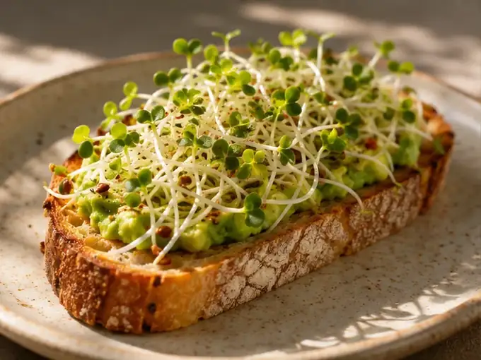

WHY BROCCOLI SPROUTS ARE GOOD
Naturally rich in
glucoraphanin
A study of certain 3-day-old broccoli sprouts found up to 100× more glucoraphanin than mature broccoli. Levels vary by variety and growing stage.
Learn more
Freshly grown in London
Grown with love and care. Naturally contains glucoraphanin, the precursor to sulforaphane.
Enquire nowA simple growing process, taking at least six days.
A study of certain 3-day-old broccoli sprouts found up to 100× more glucoraphanin than mature broccoli. Levels vary by variety and growing stage.
Learn more
Add a fresh, peppery crunch to sandwiches, salads and other favourites. Broccoli sprouts also contain vitamins A, C and K, plus fibre, protein, calcium and iron.
How to add sprouts to your diet
Sulforaphane is a powerful natural compound that gets released when broccoli sprouts are chewed. Scientific studies suggest it may help protect cells from damage, reduce inflammation and support the body's natural defence systems. Researchers are also exploring its potential role in cancer prevention and its effects on tumour growth.
Read about the researchChoose your pack, quantity and preferred date. I'll personally confirm availability, the collection or delivery time and payment arrangements through WhatsApp.
Broccoli requires at least six days to grow, so please request seven days ahead. Personal delivery is normally Tuesday to Thursday. Collection is free by appointment.
At least six days. The website requires seven days' advance notice to allow a buffer.
Collection can be requested on any day, subject to an agreed collection window. The location is confirmed privately.
Personal deliveries in selected London areas are usually available Tuesday, Wednesday and Thursday for £2.30 per order.
You can enquire about weekly or fortnightly arrangements. Automatic subscriptions and billing aren't yet available.